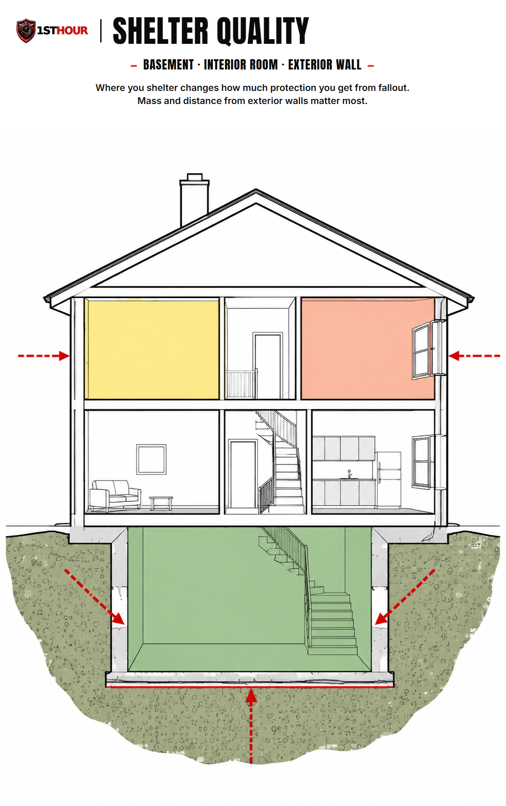
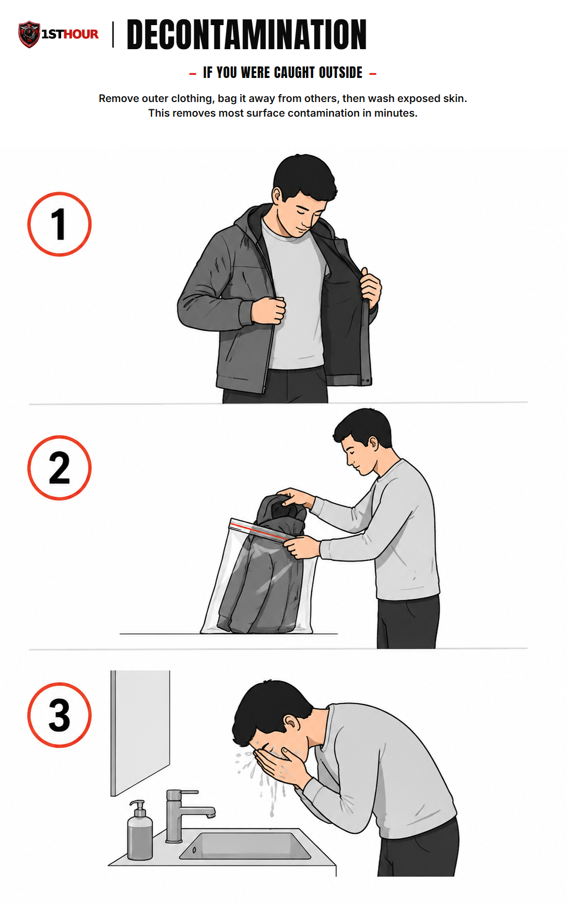

Nuclear Threat & Fallout Sheltering
Get inside. Stay inside. Stay tuned. A calm, practical guide to the first minutes, hours, and days of a nuclear or radiological event.
1. Why the First Minutes Matter
Most of this library covers a hands-on medical technique: something you do with your hands, to a wound, in a specific sequence. This book is different. There is no bandage to apply and no bleeding to stop. The single most important thing you can do in a nuclear or radiological event is simpler than that, and it happens in the first few minutes: get inside a sturdy building and stay there.
That simplicity is genuinely good news, and it is worth saying plainly and early: most people, in most locations, can meaningfully improve their own safety by taking one correct action in the first few minutes, and then continuing a straightforward routine for the following day or two. This is not a guide about surviving an unsurvivable event. It is a guide about a specific, well-understood set of hazards — blast, initial radiation, and fallout — that ordinary sheltering behavior protects against effectively, especially outside the immediate area of a detonation.
The guidance in this book follows the same framework the Department of Homeland Security, FEMA, and Ready.gov publish for the public: Get Inside. Stay Inside. Stay Tuned. Three words, in that order, cover almost everything that matters in the first hour. Everything else in this book explains what each of those three words actually means in practice.
2. Get Inside, Stay Inside, Stay Tuned
This three-part framework is the spine of this entire book. Every section that follows maps back to one of these three actions. Read this section first — everything else is detail in service of these three steps.
Get Inside
Move into the nearest sturdy building immediately — don’t wait for an announcement. Go as far inside and as far below ground as you reasonably can.
Stay Inside
Remain sheltered, away from doors and windows, through the highest-risk window for fallout — typically at least 24 hours, longer if officials say so.
Stay Tuned
Monitor official emergency broadcasts for updates and instructions. Don’t leave shelter to go looking for information — let it come to you.
Underneath these three steps is a simple physical idea worth knowing, because it explains why each step works: radiation exposure is reduced by time, distance, and shielding. The less time you spend exposed, the more distance and the more solid material (shielding) you put between yourself and fallout particles, the lower your dose. “Get inside” maximizes shielding and distance immediately. “Stay inside” maximizes the time factor by letting fallout radioactivity decay before you re-expose yourself. “Stay tuned” makes sure you act on real information instead of guesswork.
3. The First 10 Minutes
If you see a bright flash on the horizon, feel a blast wave, or receive an official alert that a detonation has occurred or is imminent, act immediately — don’t wait to see what happens next or to confirm details.
- Do not look at the flash or fireball. It can cause temporary or permanent blindness at a considerable distance. Turn away and move.
- Get inside the nearest sturdy building right away. A multi-story brick, concrete, or masonry building is best. Don’t waste time trying to reach a specific building across town — the nearest solid structure now is better than a better one later.
- If you're caught outside with no building nearby, lie flat, cover your head and exposed skin, and get behind or under anything solid (a ditch, a concrete structure, a vehicle as a last resort) until the initial blast wave passes. This step is about riding out the blast wave and flying debris — a vehicle offers little to no protection from radiation itself, so move to real shelter (Section 4) immediately afterward rather than staying put.
- Move away from windows, glass doors, and exterior walls as soon as you're inside. Broken glass and debris are a real injury risk in the first minutes, separate from any radiation concern.
- Go to the most interior, most below-grade space available — a basement is best; an interior room on the lowest floor is next. See Section 4 for exactly what makes a space “adequate.”
- If you were outside during the event, remove your outer layer of clothing before settling into your shelter space — see Section 6. This one step matters enough to do immediately, even before you've fully caught your breath.
4. What “Adequate Shelter” Means
Not all indoor spaces protect you equally. Two things determine how much protection a space actually gives you: how much solid mass is between you and the outside (concrete, brick, earth, dense material), and how much distance you have from exterior walls, windows, and the roof. More of both means less radiation reaches you.

| Location | Protection level | Why |
|---|---|---|
| Basement or below-ground space | Best | Earth around and above you adds significant mass and puts maximum distance between you and surface fallout. |
| Interior room, no windows, middle of a multi-story building | Good | Surrounding rooms and floors act as shielding; no direct line to the outside. |
| Room with exterior walls or windows | Weak | Thin walls and glass provide little shielding and a direct path for fallout particles and debris. |
| Vehicle or a thin-walled, exposed structure | Last resort only | Offers minimal shielding — use only if nothing better is available, and move to something sturdier as soon as you safely can. |
In practice: if your home has a basement, that's your destination. If it doesn't, pick the room with the fewest exterior walls and no windows — an interior bathroom, closet, or hallway on the lowest floor usually wins. A large public building (school, office building, government building) with a below-ground level is also a good option if you're away from home when an event occurs.
Urban vs. Rural Shelter Availability
This is one of the few places in this book where where you live changes the picture, and it doesn't need a state-by-state breakdown to explain: dense urban and suburban areas generally have more large, multi-story, below-grade-capable buildings within a short walk or drive, which usually means more adequate-shelter options nearby. Rural areas more often mean a single-family home is the only realistic option — if that describes your situation, know your own home's best available space (Section 4's table) before you need it, rather than improvising in the moment.
5. Fallout Timing
Fallout is radioactive debris and dust that settles out of the air in the hours after a detonation, most heavily in the immediate area and areas downwind. It is most dangerous in the first several hours after it settles and becomes steadily less dangerous as time passes — radioactive material decays, meaning it loses intensity continuously and predictably.
This is the single most important timing fact in this book: the first 24 hours are the highest-risk window, and staying sheltered through that window is the highest-value action you can take after getting inside in the first place. Official guidance is generally to remain sheltered for at least 24 hours unless local authorities instruct otherwise — and if you're able to stay sheltered longer, through 48 to 72 hours, the additional drop in radioactivity provides a further, meaningful safety margin, though exactly when it's safe to leave shelter is always something confirmed by official guidance for your specific location, not a countdown you run yourself.
If you must briefly go outside during this window — for example, to bring in a family member who was caught outdoors, or to address an urgent, unrelated emergency like a fire — minimize the time spent outside, avoid touching surfaces unnecessarily, and decontaminate immediately on returning (Section 6).
6. Decontamination If Caught Outside
If you were outside when fallout was present, or you're not sure whether you were exposed, a short decontamination routine removes the large majority of surface contamination in a few minutes. This is simple, doesn't require special equipment, and is worth doing calmly and thoroughly rather than rushing it.
- Remove your outer layer of clothing — coat, jacket, shoes — before you go further into your shelter space if possible. This single step removes most of the contamination that settled on you, since it mostly sits on the outer surface of clothing rather than skin.
- Place removed clothing in a sealed bag or container, away from people and away from the space where you'll be sheltering. Don't shake or brush it out where others are — that can spread loose particles into the air.
- Wash exposed skin with soap and water if it's available — a shower is ideal, but even washing exposed hands, face, and hair at a sink is meaningfully protective. Use lukewarm water and ordinary soap; you do not need to scrub hard or aggressively, and doing so can irritate or break skin, which is not helpful.
- Gently blow your nose and wipe your eyebrows, eyelashes, and any exposed skin with a clean, damp cloth. These areas can collect fine particles that a shower alone may not fully clear.
- If no water is available, use a clean cloth, wipes, or dry paper towels to carefully wipe exposed skin, working from clean areas toward more exposed ones, then wash as soon as water becomes available.

7. Food & Water Safety
Food and water safety during a fallout event is more straightforward than people often expect, and the news here is reassuring: anything that was sealed before the event stayed protected.
- Sealed, packaged food and beverages are safe to consume — cans, sealed bottles, and factory-sealed packaging all protect their contents from fallout contamination. Wipe the outside of a container before opening it if you're concerned dust may have settled on it.
- Water from a covered source (a sealed container, a covered well, most municipal indoor plumbing) is safe. Water storage containers you filled before the event remain safe as long as they stayed covered.
- Food or water that was left uncovered or outdoors during fallout — an open container, uncovered garden produce, an open rain barrel — should be set aside and not consumed, rather than assumed contaminated and thrown away outright. Store it separately, clearly marked, until official guidance says whether it's safe or not. Don't discard your broader food supply out of caution; the concern is specific to what was actually exposed and uncovered.
- When in doubt about any single item, set it aside rather than either consuming it or wasting it. Official guidance following the event will typically clarify what's safe; there is rarely a need to make an irreversible decision about food safety in the first hours.
8. Staying Informed
“Stay tuned” is the third part of the framework, and it's an active instruction, not a passive one — it means having a working way to receive official information and actually following it, not checking in occasionally out of curiosity.
- A battery-powered or hand-crank NOAA weather radio is the most reliable way to receive official updates if cell networks or power are down. Keep it in your kit, know where it is, and check that it works before you need it.
- Official emergency alerts — Wireless Emergency Alerts on your phone, local emergency broadcast stations, and instructions from local and federal officials — are the authoritative source for when it's safe to leave shelter, whether to evacuate instead, and any specific local guidance that overrides general advice like the guidance in this book.
- “Stay tuned” means don't leave shelter to go looking for information. Don't go outside to check on neighbors, assess damage, or get a better signal unless there's an immediate, unrelated emergency (like fire) that requires it. Let official information come to you through your radio or phone rather than exposing yourself to go find it.
- If you lose power and cell service both, the hand-crank or battery radio becomes your only reliable link — this is the specific scenario it exists for, which is why it's listed first in this section and in the checklist below.
9. Special Situations
Someone was outside when it happened
If a family or household member arrives at your shelter space after being outside during or after the event, have them decontaminate (Section 6) before joining the rest of the group in the main shelter space, if there's a way to do so separately — a garage, entryway, or bathroom near the entrance works well for this. This isn't about excluding them; it's a quick, considerate step that protects everyone sheltering together, them included.
Medically dependent household members
If someone in your household depends on powered medical equipment, refrigerated medication, or a regular supply of a specific medication, factor that into where and how you shelter — for example, keeping essential medication and any battery backup for equipment in or near your shelter space ahead of time, not scattered elsewhere in the home. If a medical situation becomes urgent while sheltering, that takes priority over general shelter guidance — call 911 or follow your medical provider's emergency instructions.
Pets
Bring pets into your shelter space with you if at all possible — the same get-inside logic applies to them. Keep them calm and contained (a carrier or leash helps) in an unfamiliar, possibly crowded space, and don't let them outside during the sheltering window described in Section 5.
10. What This Book Is (and Isn’t)
It's worth saying this plainly, without hedging, because it's both true and genuinely reassuring: this book covers how to get through the acute phase of a nuclear or radiological event — the first minutes, the first day, and the following two to three days of sheltering — using well-established, publicly available guidance. That acute-phase window is where the highest-value, most time-sensitive actions live, and it's the part where correct behavior makes the largest practical difference.
This book is not a guide to long-term survivalism, a doomsday-scenario manual, or a comprehensive treatment of every possible aftermath. It doesn't need to be, and stretching it to cover more than that would work against the point of it: a short, clear, actionable guide that someone can actually read, remember, and use under stress. If you want to go deeper into long-term emergency preparedness, the Grid-Down protocol covers the sustained, multi-day operational side — food, water, power, and communication — that overlaps with the later part of a fallout-sheltering scenario.
11. Essential Items Checklist
The single biggest advantage in this scenario is simply already being inside, with these items already gathered, before anything happens. Run through this list now, not after an alert.
- Battery-powered or hand-crank NOAA weather radio — Section 8. Your link to official information if power and cell service are both down.
- Stored water (at least 1 gallon per person per day, several days' supply) — Section 7. Keep it covered/sealed so it stays safe.
- Sealed, non-perishable food, several days' supply — Section 7. Factory-sealed packaging protects contents automatically.
- Flashlight and spare batteries — for a below-ground or windowless shelter space, which may have no natural light.
- Sealable plastic bags — Section 6. For bagging outer clothing that may carry surface contamination.
- Soap and a supply of clean water for washing — Section 6. Core decontamination supplies.
- A few days of any essential medication — Section 9. Especially important for medically dependent household members.
- Basic first aid kit — for any unrelated injury during sheltering; see the Severe Bleeding protocol for technique.
12. Medical Disclaimer
This guide is for general educational purposes only and does not constitute medical advice, diagnosis, or treatment. It is not a substitute for professional medical care, emergency medical services, or official emergency management guidance.
In any real emergency, follow instructions from local officials and emergency broadcasts ahead of anything in this guide if they differ — official, real-time guidance always takes precedence over general published material.
This content is procedural preparedness guidance drawn from public FEMA and Ready.gov-style sources covering the acute phase of a nuclear or radiological event. It is not clinical medical advice, not radiological/health-physics consulting, and not a substitute for guidance from public health authorities, particularly regarding any specific medical response (such as potassium iodide use), which should only be taken on the instruction of public health officials.
1st Hour and its parent company make no warranty, express or implied, regarding outcomes from applying the information in this guide, and disclaim liability for actions taken based on its contents to the fullest extent permitted by law.
Editor's note: this edition reflects content as of August 24, 2026. 1st Hour periodically revises protocol guides as best practices evolve — visit 1sthourprotocols.com/nuclear-threat for the current edition and to re-download the latest PDF.